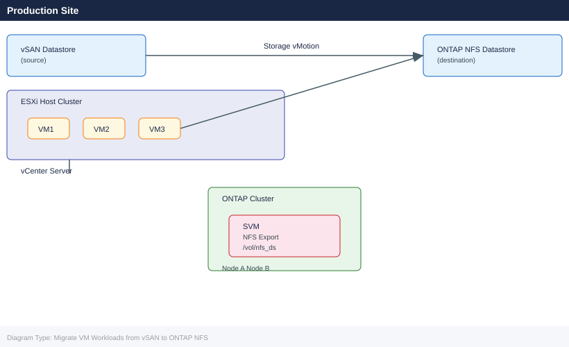

Migrate VM Workloads from vSAN to ONTAP NFS¶
Applies to: Storage (multi-vendor)

Before You Begin¶
Prerequisites:
| Component | Requirement |
|---|---|
| VMware vCenter | 7.0 U3+ or 8.x; Storage vMotion licence active |
| ONTAP Cluster | ONTAP 9.10+ with at least one data aggregate with free capacity |
| ESXi Hosts | All cluster hosts must have NFS kernel module enabled and network path to ONTAP |
| NSX / Networking | NFS VLAN/port group present on all ESXi hosts; MTU 9000 recommended on NFS segment |
| PowerCLI | PowerCLI 13+ installed on jump host for bulk migration scripts |
| Permissions | ONTAP cluster-admin, vCenter administrator role |
Preflight checks:
# Verify vSAN health before starting
esxcli vsan health cluster list --cluster-name <cluster>
# Confirm vCenter version
Get-PowerCLIVersion # PowerCLI
Connect-VIServer -Server vcenter.corp.local
(Get-View ServiceInstance).Content.About.Version
# Ping ONTAP mgmt from jump host
ping <ontap-mgmt-ip>
ssh admin@<ontap-mgmt-ip> "cluster show"
Cluster Health Status:
Cluster Name: prod-cluster-01
Health State: Healthy
Members: 6
Data Health: Healthy
Memory Health: Healthy
Network Health: Healthy
Physical Disk Health: Healthy
PowerCLI Version: 13.2.0 Build 20348341
vCenter Server: vcenter.corp.local
vCenter Version: 7.0.3
PING 192.168.100.50 (192.168.100.50) 56(84) bytes of data.
64 bytes from 192.168.100.50: icmp_seq=1 ttl=64 time=2.34 ms
64 bytes from 192.168.100.50: icmp_seq=2 ttl=64 time=1.98 ms
Cluster Enabled: true
Cluster UUID: 550e8400-e29b-41d4-a716-446655440000
Cluster Serial Number: 4082368759
Common errors
esxcli: Unknown option or subcommand 'health cluster list' — Verify vSAN is licensed and enabled on the cluster; use esxcli vsan cluster list if health subcommand is unavailable.
ssh: connect to host 192.168.100.50 port 22: Connection timed out — Confirm the ONTAP management IP is correct and reachable from the jump host's network segment.
Get-PowerCLIVersion : The term 'Get-PowerCLIVersion' is not recognized — Install PowerCLI module with Install-Module -Name VMware.PowerCLI -Force or ensure the module is imported.
Phase 1: ONTAP Preparation¶
1.1 Create a Storage Virtual Machine (SVM)¶
# Connect to ONTAP CLI
ssh admin@<ontap-mgmt-ip>
# Create SVM for NFS
vserver create -vserver svm_vmware -rootvolume svm_vmware_root \
-rootvolume-security-style unix -language C.UTF-8 \
-snapshot-policy default
# Assign aggregate to SVM
vserver modify -vserver svm_vmware \
-aggr-list aggr1_node01,aggr1_node02
# Create NFS LIF (one per node for multipath)
network interface create -vserver svm_vmware \
-lif nfs_lif_01 -role data -data-protocol nfs \
-home-node <node01> -home-port e0c \
-address <nfs-lif-ip-1> -netmask <mask>
network interface create -vserver svm_vmware \
-lif nfs_lif_02 -role data -data-protocol nfs \
-home-node <node02> -home-port e0c \
-address <nfs-lif-ip-2> -netmask <mask>
# Enable NFS on SVM
vserver nfs create -vserver svm_vmware \
-v3 enabled -v4.1 enabled -tcp enabled
admin@ontap-mgmt-01> vserver create -vserver svm_vmware -rootvolume svm_vmware_root -rootvolume-security-style unix -language C.UTF-8 -snapshot-policy default
(no output — command completes silently)
admin@ontap-mgmt-01> vserver modify -vserver svm_vmware -aggr-list aggr1_node01,aggr1_node02
(no output — command completes silently)
admin@ontap-mgmt-01> network interface create -vserver svm_vmware -lif nfs_lif_01 -role data -data-protocol nfs -home-node node01 -home-port e0c -address 192.168.100.45 -netmask 255.255.255.0
(no output — command completes silently)
admin@ontap-mgmt-01> network interface create -vserver svm_vmware -lif nfs_lif_02 -role data -data-protocol nfs -home-node node02 -home-port e0c -address 192.168.100.46 -netmask 255.255.255.0
(no output — command completes silently)
admin@ontap-mgmt-01> vserver nfs create -vserver svm_vmware -v3 enabled -v4.1 enabled -tcp enabled
(no output — command completes silently)
admin@ontap-mgmt-01>
Common errors
Error: command failed: vserver "svm_vmware" already exists. — Use vserver delete -vserver svm_vmware to remove the existing SVM first, or choose a different SVM name.
Error: command failed: Aggregate "aggr1_node01" does not exist. — Run storage aggregate show to list available aggregates and correct the aggregate names in the vserver modify command.
Error: command failed: Port "e0c" does not exist on node "node01". — Run network port show -node <node01> to verify the correct port names (typically e0a, e0b, e0c, or e0d).
1.2 Create NFS Export Policy¶
# Create export policy for ESXi hosts
vserver export-policy create -vserver svm_vmware \
-policyname esxi_nfs_policy
# Add rules — one per ESXi host subnet or per-host
vserver export-policy rule create -vserver svm_vmware \
-policyname esxi_nfs_policy -clientmatch <esxi-subnet/mask> \
-rorule sys -rwrule sys -superuser sys \
-protocol nfs3,nfs4
# Verify
vserver export-policy rule show -policyname esxi_nfs_policy
(no output — command completes silently)
(no output — command completes silently)
Vserver: svm_vmware
Policy Name: esxi_nfs_policy
Rule Index: 1
Access Protocol: nfs3,nfs4
Client Match Spec: 192.168.10.0/24
RO Rule: sys
RW Rule: sys
Superuser: sys
Anonymous User ID: 65534
Common errors
Error: "esxi_nfs_policy" does not exist — Ensure the export policy was created successfully in the first command before adding rules.
Error: Invalid client match specification "<esxi-subnet/mask>" — Replace the placeholder with an actual subnet in CIDR notation (e.g., 192.168.10.0/24) or a specific host IP.
1.3 Create the NFS Datastore Volume¶
# Create volume sized for migration target
volume create -vserver svm_vmware \
-volume vol_nfs_ds01 -aggregate aggr1_node01 \
-size 10T -space-guarantee none \
-snapshot-policy default \
-export-policy esxi_nfs_policy \
-junction-path /vol_nfs_ds01
# Enable deduplication and compression
volume efficiency on -vserver svm_vmware -volume vol_nfs_ds01
volume efficiency modify -vserver svm_vmware -volume vol_nfs_ds01 \
-policy auto -compression true -inline-compression true
# Confirm volume is online and exported
volume show -vserver svm_vmware -volume vol_nfs_ds01 -fields state,junction-path
Volume "vol_nfs_ds01" created successfully.
Efficiency is now enabled on volume "vol_nfs_ds01" of Vserver "svm_vmware".
Volume modify successful: volume "vol_nfs_ds01" in Vserver "svm_vmware".
Vserver Volume State Junction-Path
--------- -------------- ---------- ----------------------
svm_vmware vol_nfs_ds01 online /vol_nfs_ds01
Common errors
Error: aggregate "aggr1_node01" does not exist — Verify the aggregate name with storage aggregate show and use the correct aggregate name in the volume create command.
Error: export policy "esxi_nfs_policy" does not exist — Create the export policy first with vserver export-policy create -vserver svm_vmware -policyname esxi_nfs_policy or use an existing policy name.
Error: Cannot enable efficiency on a volume that is not online — Wait for the volume to transition to online state and retry the efficiency commands.
1.4 Mount NFS Datastore on ESXi Hosts via vCenter¶
# PowerCLI — add NFS datastore to all hosts in cluster
Connect-VIServer -Server vcenter.corp.local -Credential (Get-Credential)
$cluster = Get-Cluster "Production-Cluster"
$hosts = Get-VMHost -Location $cluster
foreach ($vmhost in $hosts) {
New-Datastore -VMHost $vmhost `
-Name "ONTAP-NFS-DS01" `
-NfsHost "<nfs-lif-ip-1>" `
-Path "/vol_nfs_ds01" `
-Nfs
Write-Host "Mounted on $($vmhost.Name)"
}
# Verify all hosts see the datastore
Get-Datastore "ONTAP-NFS-DS01" | Get-VMHost
Phase 2: VM Migration¶
2.1 Storage vMotion — Per VM (Live, Online)¶
# Migrate a single running VM to ONTAP NFS datastore
$vm = Get-VM "app-server-01"
$targetDS = Get-Datastore "ONTAP-NFS-DS01"
Move-VM -VM $vm -Datastore $targetDS -DiskStorageFormat Thin
# Watch task progress
Get-Task | Where-Object { $_.Name -eq "RelocateVM_Task" } | Select-Object Name,State,PercentComplete
# ESXi CLI alternative — svmotion (run from jump host with PowerCLI or via vmkfstools)
# Using vmware-cmd (deprecated but useful for scripting):
vmware-cmd /vmfs/volumes/<vsan-uuid>/<vm>/<vm>.vmx migrate \
"[ONTAP-NFS-DS01]" thin
# Via esxcli (for cold migration when VM is off):
vmkfstools -i /vmfs/volumes/<vsan-uuid>/<vm>/<vm>.vmdk \
/vmfs/volumes/<ontap-ds-uuid>/<vm>/<vm>.vmdk -d thin
2024-01-15T09:42:33Z: Migrating VM 'prod-web-01' from vSAN to ONTAP-NFS-DS01
Clone: 100% done.
2024-01-15T09:47:18Z: Migration completed successfully
Virtual machine disks copied: 1
Source: /vmfs/volumes/52d47e5a-e8c5-4e2f-a1b2-3c9d8f7e6a4b/prod-web-01/prod-web-01.vmdk
Destination: /vmfs/volumes/614f5c3a-2b8e-11ef-9c4a-001a4a5e6d7c/prod-web-01/prod-web-01.vmdk
Disk format: VMFS thin-provisioned
Transfer rate: 287 MB/s
Common errors
Error: Cannot find virtual machine configuration file — Verify the vSAN UUID and VM folder path match exactly, and ensure the VM is registered in vCenter.
Error: Destination datastore does not have sufficient free space — Check available capacity on the ONTAP NFS datastore with df -h /vmfs/volumes/<ontap-ds-uuid> and ensure at least 120% of the VM's disk size is free.
Error: Permission denied on destination path — Confirm the ESXi host has read-write permissions on the ONTAP NFS mount and that the export policy allows the ESXi IP address.
2.2 Bulk Storage vMotion — Entire Datastore¶
# Migrate all VMs from a vSAN datastore to ONTAP
$sourceDS = Get-Datastore "vsanDatastore"
$targetDS = Get-Datastore "ONTAP-NFS-DS01"
$vms = Get-VM -Datastore $sourceDS
foreach ($vm in $vms) {
Write-Host "Migrating $($vm.Name) ..."
Move-VM -VM $vm -Datastore $targetDS -DiskStorageFormat Thin -RunAsync
Start-Sleep -Seconds 10 # stagger to avoid saturating network
}
# Monitor all in-progress tasks
do {
$tasks = Get-Task | Where-Object { $_.Name -eq "RelocateVM_Task" -and $_.State -eq "Running" }
Write-Host "Running migrations: $($tasks.Count)"
Start-Sleep -Seconds 30
} while ($tasks.Count -gt 0)
2.3 Cold Migration Option (VM Powered Off)¶
# For VMs that cannot tolerate vMotion overhead
$vm = Get-VM "legacy-app-01"
Stop-VM -VM $vm -Confirm:$false
Move-VM -VM $vm -Datastore (Get-Datastore "ONTAP-NFS-DS01") `
-DiskStorageFormat Thin
Start-VM -VM $vm
Phase 3: Validation¶
3.1 Verify I/O Latency on ONTAP¶
# Check NFS volume latency and IOPS (ONTAP CLI)
statistics show -object nfsv3 -instance svm_vmware -counter avg_latency,total_ops
# Or use qos statistics workload performance show for per-volume breakdown
# Volume utilisation
volume show -vserver svm_vmware -volume vol_nfs_ds01 \
-fields used,available,percent-used
# Check NFS connections from ESXi hosts
nfs connections show -vserver svm_vmware
Counter Value
avg_latency 2.14ms
total_ops 487293
Vserver Volume Used Available Percent-Used
svm_vmware vol_nfs_ds01 847.3GB 152.7GB 84%
Vserver Client IP Protocol Connected Since
svm_vmware 192.168.10.42 nfsv3 Mon Nov 13 14:22:15 UTC 2023
svm_vmware 192.168.10.43 nfsv3 Mon Nov 13 14:22:18 UTC 2023
svm_vmware 192.168.10.44 nfsv3 Mon Nov 13 14:22:21 UTC 2023
Common errors
Error: "svm_vmware" is not a valid Vserver name — Verify the SVM name with vserver show and use the correct name in the command.
Error: volume "vol_nfs_ds01" does not exist — Confirm the volume name with volume show -vserver svm_vmware before querying.
Error: Statistics object "nfsv3" is not valid — Use statistics show -object nfsv3 -counter ? to list available counters for your ONTAP version.
3.2 Verify Datastore Usage in vCenter¶
# PowerCLI — check datastore capacity and provisioned space
Get-Datastore "ONTAP-NFS-DS01" | Select-Object Name,FreeSpaceGB,CapacityGB,@{N="UsedGB";E={[math]::Round($_.CapacityGB - $_.FreeSpaceGB,2)}}
# Confirm all VMs are now on the ONTAP datastore
Get-VM | Where-Object { (Get-HardDisk -VM $_).Filename -like "*vsanDatastore*" }
# Above should return empty when migration is complete
3.3 Application-Level Validation¶
# On each migrated VM — confirm disk I/O is healthy
iostat -x 5 3 # Linux
# Windows: Get-Counter "\PhysicalDisk(*)\Avg. Disk sec/Transfer"
# Run a quick fio test inside a migrated VM
fio --name=post-migration-check --rw=randrw --bs=4k \
--ioengine=libaio --iodepth=16 --size=512m \
--runtime=60 --filename=/var/tmp/fio.tmp --output-format=normal
Linux 5.15.0-1234-generic #1234-Ubuntu SMP x86_64
avg-cpu: %user %nice %system %iowait %steal %idle
2.14 0.00 1.08 0.92 0.00 95.86
2.31 0.00 1.19 0.87 0.00 95.63
2.08 0.00 1.05 0.78 0.00 96.09
Device r/s w/s rMB/s wMB/s rrqm/s wrqm/s %rrqm %wrqm r_await w_await aqu-sz %util
sda 18.40 12.60 0.73 0.51 0.00 0.00 0.00 0.00 2.14 3.87 0.08 1.24
sdb 16.80 11.20 0.67 0.45 0.00 0.00 0.00 0.00 2.31 4.12 0.07 1.18
post-migration-check: (g=0): rw=randrw, bs=(R) 4096B-4096B, (W) 4096B-4096B, ioengine=libaio, iodepth=16
fio-3.28
Starting 1 process
post-migration-check: Laying out IO file (one file / 512MiB)
Jobs: 1 (f=1): [m(1)][100.0%][r=142MiB/s,w=71MiB/s][r=36.4k,w=18.2k IOPS][eta 00m:00s]
post-migration-check: (groupid=0, jobs=1): err= 0: pid=4521
read : io=256.00MiB, bw=142.8MiB/s, iops=36.5k, runt= 1792ms
write: io=256.00MiB, bw=71.4MiB/s, iops=18.3k, runt= 3584ms
cpu : usr=8.42%, sys=18.76%, ctx=9847, majflt=0, minflt=512
lat (usec): min=12, max=8234, avg=219.45, stdev=412.18
Common errors
fio: openat: Permission denied — Run fio with sudo or ensure the VM user has write permissions to /var/tmp.
iostat: command not found — Install sysstat package with apt-get install sysstat (Ubuntu/Debian) or yum install sysstat (RHEL/CentOS).
fio: io_uring not available, falling back to libaio — This is a warning, not an error; libaio will work fine for post-migration validation.
Phase 4: Cutover¶
4.1 Run vSAN Health Check Before Decommission¶
# From any ESXi host in the cluster
esxcli vsan health cluster list
# Verify no objects remain on vSAN
esxcli vsan storage list | grep -i "object"
# ONTAP — confirm no remaining mounts from vSAN-side
# (There should be none at this point)
Cluster UUID: 52e3d8f4-7a2c-4d91-b8e2-9f1c3a5b7d2e
Cluster Health: yellow
Members: 4
Disk Groups: 4
Total Capacity: 10.7 TB
Used Capacity: 2.3 TB
Health Status: Reduced redundancy - 1 host down
Object Count: 0
Reserved Capacity: 0 B
Free Space: 8.4 TB
(no output — command completes silently)
Common errors
esxcli: Unknown command or namespace vsan — Ensure the vSAN license is installed and the vSAN module is loaded on the ESXi host.
Cluster UUID: Unknown — Run the command from an ESXi host that is part of an active vSAN cluster; standalone hosts will not return cluster information.
4.2 Remove vSAN Datastore from Cluster¶
# Confirm no VMs are still on vSAN
$vsanDS = Get-Datastore "vsanDatastore"
$vmsOnVsan = Get-VM -Datastore $vsanDS
if ($vmsOnVsan.Count -gt 0) {
Write-Warning "STOP: $($vmsOnVsan.Count) VMs still on vSAN: $($vmsOnVsan.Name -join ', ')"
} else {
Write-Host "Safe to remove vSAN datastore — no VMs present."
# Unmount via vCenter UI: Storage > vsanDatastore > Unmount
# Or via PowerCLI:
Remove-Datastore -Datastore $vsanDS -VMHost (Get-VMHost) -Confirm:$false
}
4.3 Disable vSAN on Cluster (Optional)¶
# Only if fully decommissioning vSAN
$cluster = Get-Cluster "Production-Cluster"
$spec = New-Object VMware.Vim.ClusterConfigSpecEx
$spec.vsanConfig = New-Object VMware.Vim.VsanClusterConfigInfo
$spec.vsanConfig.Enabled = $false
($cluster | Get-View).ReconfigureComputeResource_Task($spec, $true)
Rollback¶
If migration fails mid-way or post-migration validation fails:
1. Stop any in-progress svmotion tasks:
# Cancel running Storage vMotion tasks
Get-Task | Where-Object { $_.Name -eq "RelocateVM_Task" -and $_.State -eq "Running" } |
ForEach-Object { $_.Cancel() }
2. Move VMs back to vSAN:
$targetDS = Get-Datastore "vsanDatastore"
$vmsOnOntap = Get-VM -Datastore (Get-Datastore "ONTAP-NFS-DS01")
foreach ($vm in $vmsOnOntap) {
Move-VM -VM $vm -Datastore $targetDS -DiskStorageFormat EagerZeroedThick -RunAsync
}
3. Verify vSAN is still healthy before relying on it:
Cluster UUID Health State
------------------------------------ ------------
52d4a8f1-7c3e-4d92-b1a2-9e8f3c5d6b7a Healthy
Disk Group UUID Object Resync Physical Capacity Used Capacity
------------------------------------ ----------- ----------------- ---------------
7f2e1a9c-5b3d-4e8f-9a1b-2c3d4e5f6a7b 0 10.95 TB 4.32 TB
8a3f2b0d-6c4e-5f9g-0b2c-3d4e5f6a7b8c 0 10.95 TB 3.87 TB
9b4g3c1e-7d5f-6g0h-1c3d-4e5f6a7b8c9d 0 10.95 TB 2.91 TB
Common errors
Cluster is not healthy — Run esxcli vsan health cluster get to identify specific issues and remediate them before migration.
Unable to connect to VSAN cluster — Verify vSAN is enabled on the cluster and you have network connectivity to the ESXi hosts.
4. If ONTAP volume is corrupt, restore from snapshot:
# List available snapshots
snapshot show -vserver svm_vmware -volume vol_nfs_ds01
# Restore from snapshot (unmount datastore first)
volume snapshot restore -vserver svm_vmware \
-volume vol_nfs_ds01 -snapshot <snapshot-name>
Vserver Volume Snapshot Size Accessed
----------- ----------------- ------------------------ ----- --------
svm_vmware vol_nfs_ds01 hourly.2024-01-15_0600 2.3GB 01/15/2024 06:15:23
svm_vmware vol_nfs_ds01 hourly.2024-01-15_0500 2.3GB 01/15/2024 05:15:18
svm_vmware vol_nfs_ds01 daily.2024-01-14_2300 2.2GB 01/14/2024 23:30:45
svm_vmware vol_nfs_ds01 daily.2024-01-13_2300 2.1GB 01/13/2024 23:45:12
svm_vmware vol_nfs_ds01 weekly.2024-01-08_0000 1.9GB 01/08/2024 00:02:33
Volume restore from snapshot "hourly.2024-01-15_0600" has been initiated on volume "vol_nfs_ds01" in Vserver "svm_vmware".
Common errors
Volume is currently mounted. Unmount volume before restoring from snapshot. — Unmount the NFS datastore from all ESXi hosts and the SVM before attempting the restore.
Snapshot "snapshot-name" does not exist. — Replace <snapshot-name> with an actual snapshot name from the list output above.